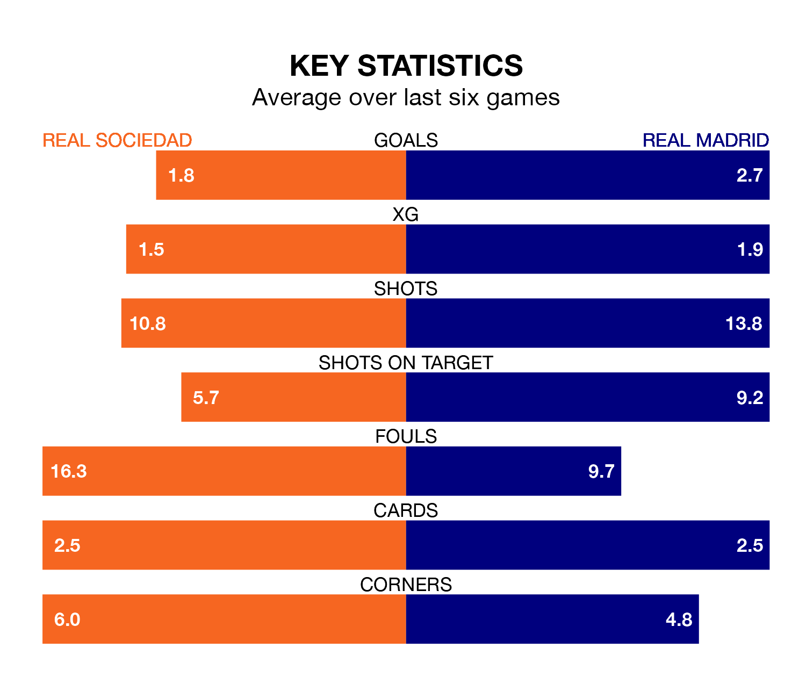

Two of La Liga's meanest defences go head-to-head at the Reale Arena on Friday, when Real Madrid visit Real Sociedad.
No teams have conceded fewer goals than Madrid to date: the away side have let in just 22 goals in 32 games.
La Real have conceded 34 goals in 32 games, giving them the joint-third tightest back line so far this season.
Key to Madrid's home form has been Andriy Lunin, who has allowed 0.55 goals past him per 90 minutes, compared to 0.82 for Álex Remiro in the opposite net.
Madrid are top of the table after 32 games, of which they have won 25 and drawn six, earning 81 points.
La Real are five places behind the away side in sixth, with 13 wins and 12 draws putting them on 51 points.
In Jude Bellingham, Madrid have one of the league's sharpest shooters so far this season. He has notched 17 goals in 25 appearances, to sit second in the scoring charts.
His goal rate of one every 125 minutes is quicker than that of Mikel Oyarzabal, la Real's top scorer with a goal every 195 minutes, and a total of nine goals in 27 games.
The hosts are in reasonable form in La Liga, with three wins and two draws from their last six games.
With five wins and a draw over that period, Madrid's form is better – they have taken 16 points from 18, compared to La Real's 11.
In the last 10 years, La Real and Madrid have played each other on 20 occasions. La Real won five of them, Madrid 12, and they drew three times.
On average, la Real scored 1.2 goals and Madrid 2.1 in those matches.
Their last meeting was on September 17, when Madrid won 2-1 at home.
La Real's last match was on Sunday, a 1-1 draw against Getafe CF, with Ander Barrenetxea getting the goal for la Real.
Madrid beat FC Barcelona 3-2 last time out, also on Sunday, with Bellingham, Lucas Vázquez and Vinicius Junior on the scoresheet.
Friday's match will be refereed by José Luis Munuera Montero, who has taken charge of 16 La Liga games so far this season, issuing three red cards and booking 83 players. He has awarded four penalties.
The last La Real game Munuera Montero refereed was a 2-1 away loss to Athletic Club Bilbao on January 13. His last Madrid match was their 2-0 win at home against UD Las Palmas on September 27.
Updated: 07:59 (UTC), 26/04/24